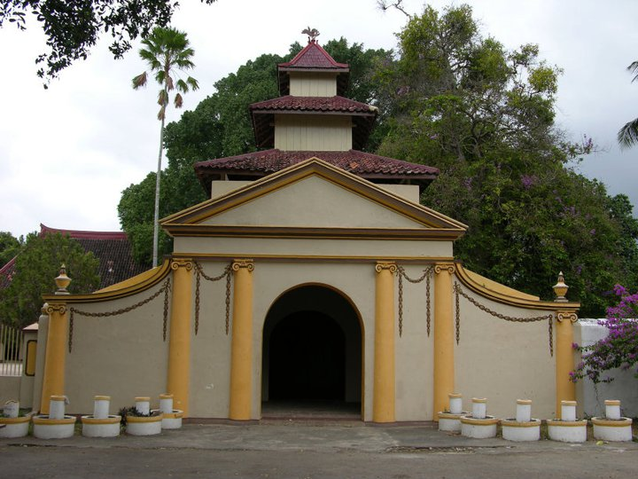
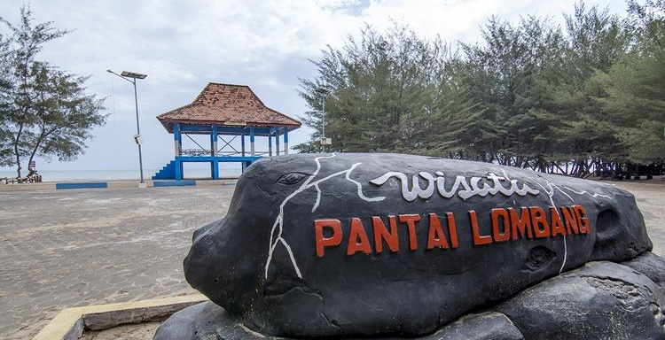

Destinasi Wisata Sumenep

Keraton Sumenep
The only palace in East Java that's still standing strong and looking majestic. It has a super unique mix of Javanese, Madurese, Chinese, and European architecture.

Pantai Lombang
A super iconic beach with soft white sand and rare sea pine trees (cemara udang) lining up the coast

Gili Labak
An exotic little cluster of islands with crazy clear underwater views—total heaven for snorkeling lovers.